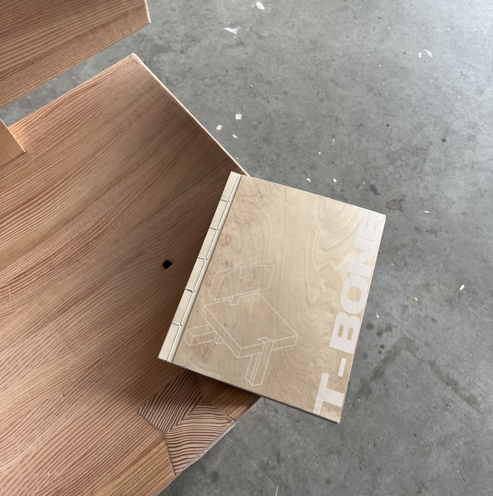
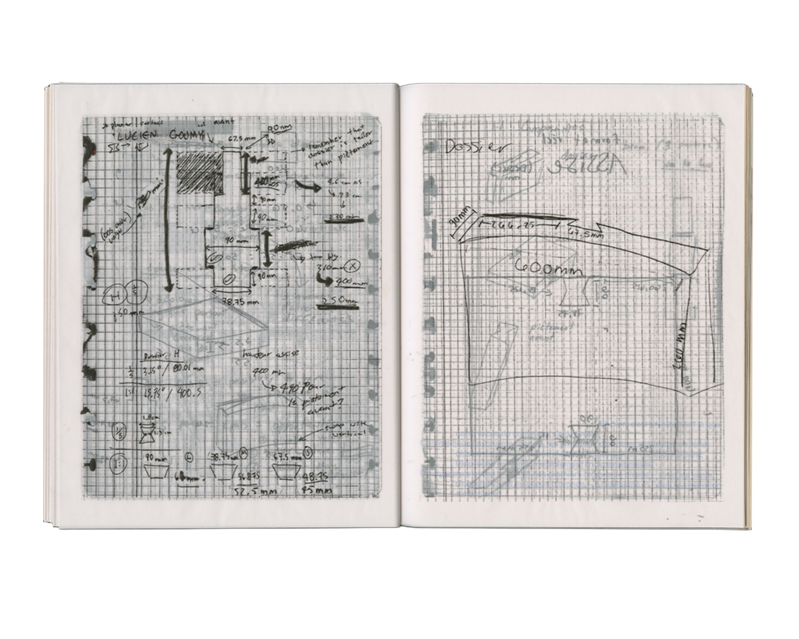
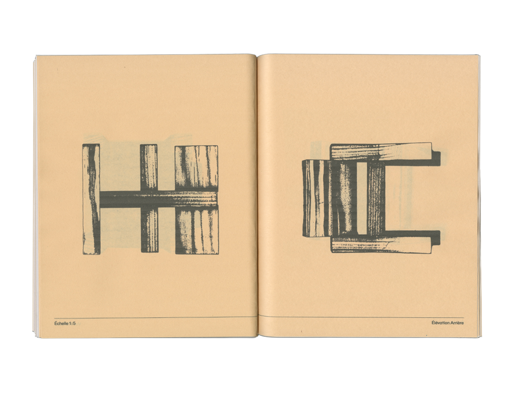
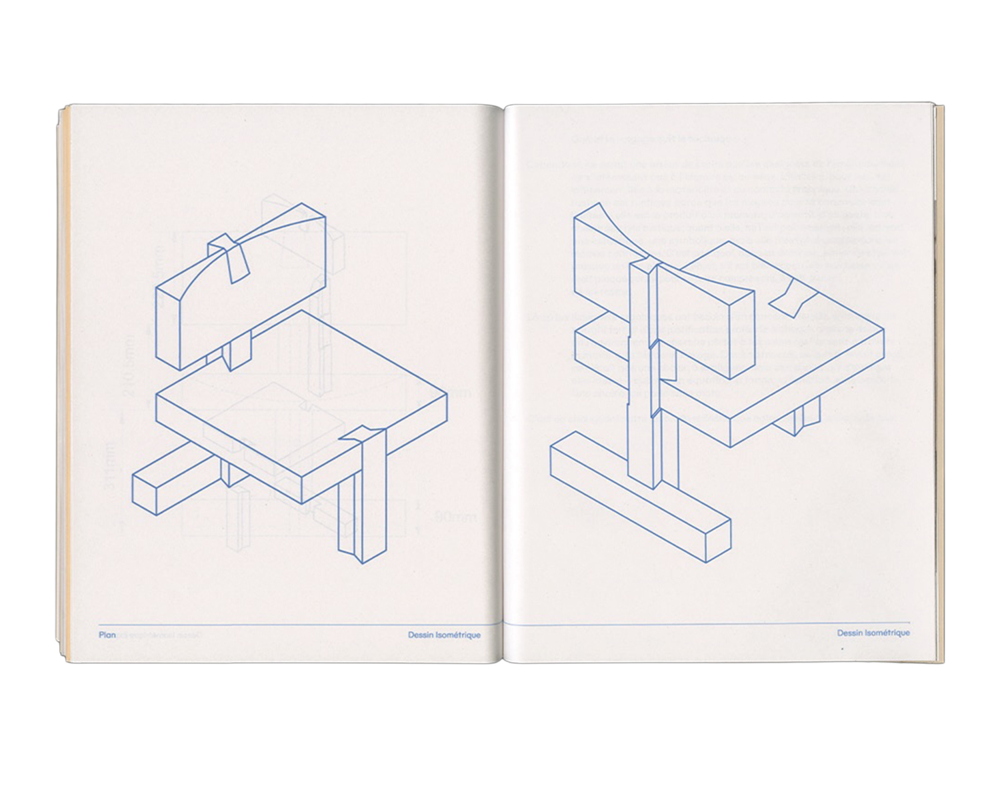
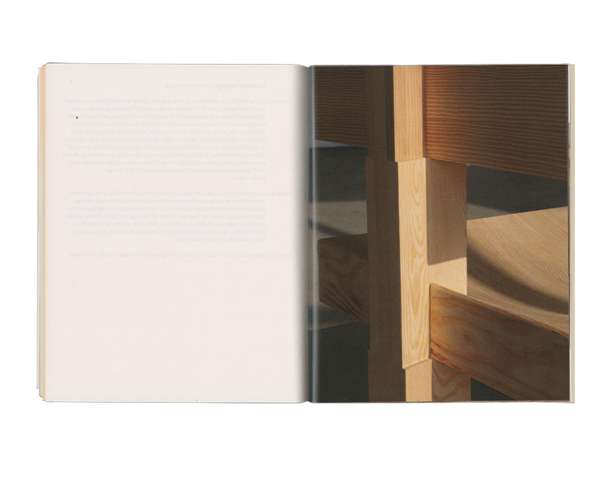

Co-edited and co-published with Alicia Melançon following the completion of our first chair.

"Building a chair sounds fun."
"What if we built a chair in the style of [...]
"It could have a crazy shape."
That was our mindset before enrolling in Guillaume Sasseville's course. Within the first class, however, it became clear that the way we approached design was almost the exact opposite of the mindset required to build a chair.
As communication designers, our design process differs fundamentally from that of industrial or environmental designers. That distinction became the starting point of this project.
Graphic design is largely a two-dimensional discipline. We conduct research, establish a conceptual direction, print countless iterations, return to the computer to refine them, produce new variations, and repeat the process. There is nothing inherently wrong with this method. In fact, it is precisely how we are taught to work.
Yet it was this very way of thinking that shaped our first attempts at designing a chair. We quickly realized that every design discipline possesses its own logic, one that cannot simply be transferred from one field to another.
"How can a chair be constructed using a non-conventional dovetail joint for its seat?"
The Challenge
A chair assembled with dovetail joints is far from common. As mentioned, this joinery technique is traditionally associated with furniture built around corners rather than seating. The question therefore became: how could the dovetail joint be translated into the construction of a chair without relying on conventional angular assemblies?
Our research naturally led us toward traditional Japanese woodworking. Renowned for its remarkable precision, Japanese joinery relies on intricate interlocking systems that require neither nails nor screws, holding together solely through the accuracy of their construction.
Wolfram Graubner's "Wood Joinery: Europe and Japan Face to Face" became an essential reference. It helped us understand not only the structural logic of the dovetail joint but also the contexts in which it traditionally operates. More importantly, it encouraged us to imagine how this system could be adapted, expanded, or entirely reinterpreted at a different scale and for a different purpose.
When the Drawing Becomes an Object
Communication designers work through visual language and continuously draw from historical movements, artistic traditions, and critical theory. Meaning precedes aesthetics. A compelling visual outcome emerges from a strong concept, whereas aesthetics alone, without an underlying idea, hold little value.
Because of this, most of our work exists through research, drawings, and plans. We assumed that, since we excelled in that stage of the process, building a chair would simply be an extension of our existing skills.
That confidence disappeared almost immediately.
As we presented our first sketches, complete with dovetail assemblies, Guillaume and Félix offered a simple response:
"Go to the workshop. Ask the technicians to make you a dovetail joint. Hold it. Look at it. That's when you'll understand. The computer is two-dimensional. Don't work that way. Work with the object."
They were absolutely right.
We were attempting to solve a three-dimensional problem using a two-dimensional way of thinking. For environmental designers, physical models occupy the same role that sketches do for communication designers. They are thinking tools. Tangible drafts through which ideas evolve.

Giving Form to a Draft
Yet even those drafts demand a level of technical precision that can only emerge through construction drawings and three-dimensional modeling.
This became another fundamental lesson of the project: learning how to translate an idea into the language of construction.
Drawing a dovetail joint on paper is one thing. Conceiving it as a structural element, with constraints of material, angle, thickness, strength, and assembly, is something entirely different. It was only through our first 3D models that we truly understood how each component interacted, how forces would be distributed, and ultimately, how the chair could actually stand.

When Meaning Follows Technique
It would be a mistake, however, to assume that environmental designers are unconcerned with history or meaning. Their understanding of history is deeply rooted in materiality and technical context.
A rustic chair is rustic because it emerges from specific tools, techniques, and material limitations. It is the product of a particular moment in time. A chair designed in a rustic style, by contrast, merely reproduces an aesthetic vocabulary without inheriting the conditions that originally produced it.
Within this discipline, speaking of style alone is almost considered a misunderstanding. If an object is well designed, it does not require an external narrative to justify itself. It should communicate through its own construction.
Where communication designers often begin with concepts, narratives, and systems of meaning, environmental design allows meaning to emerge through material, form, and use.
Our goal was therefore not to design a chair that needed explanation. It was to design a chair that explained itself, one in which form, function, structure, and comfort naturally converged.
Only after changing the way we thought could the chair finally come into existence.


Acknowledgements
UQAM Multidisciplinary Workshop:
Rachel Gravouil
Marco Landry
Raphaël Millette
Summer 2025 Chair Cohort
Academic Supervision
UQAM School of Design:
Guillaume Sasseville
Félix MacLean